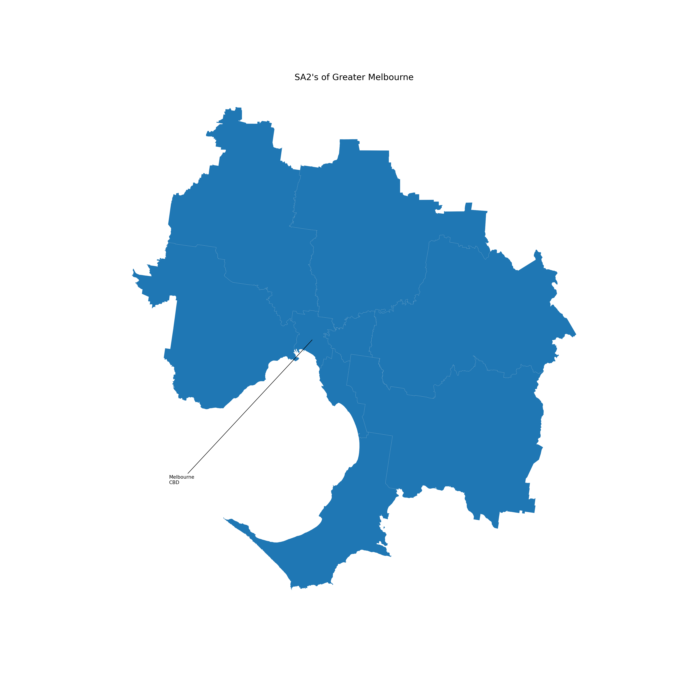
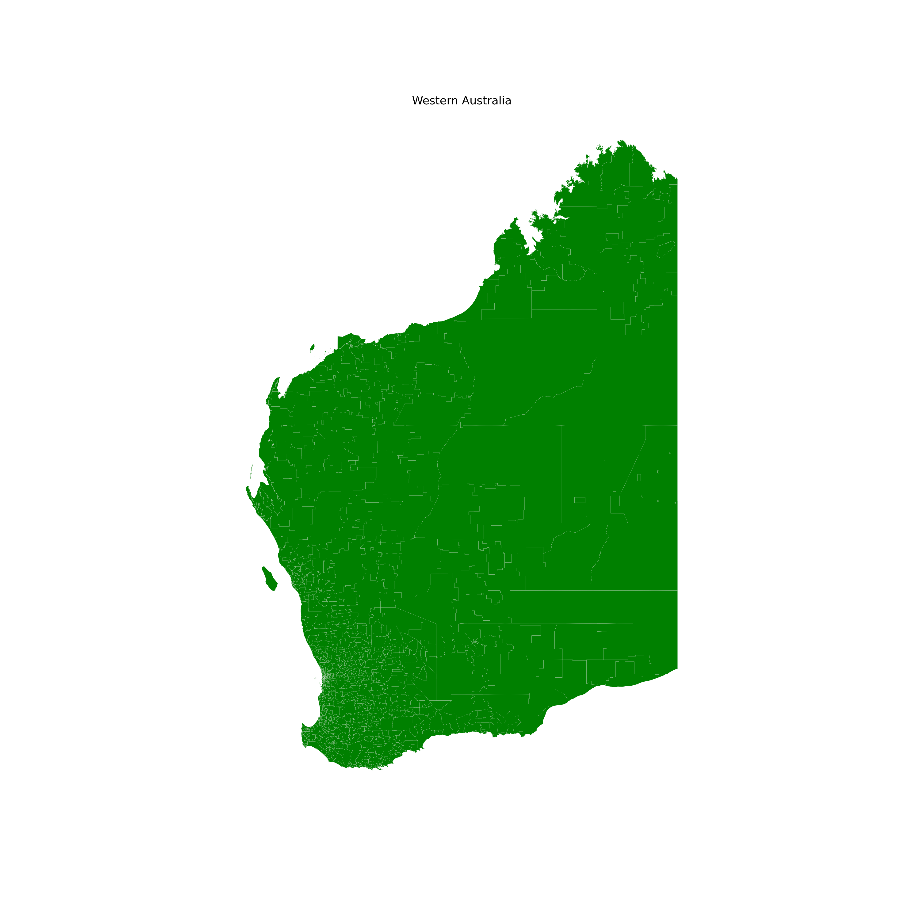
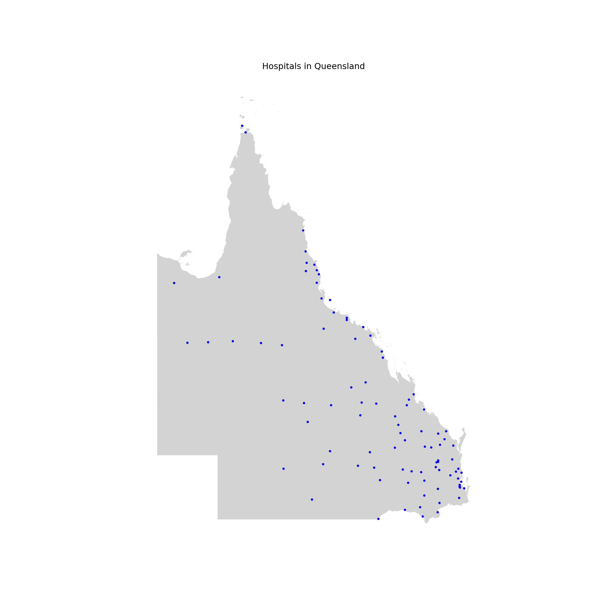

Chapter 3 Making maps with python
Maps are a great way to communicate data. They’re easily understandable, flexible, and more intuitive than a chart. There’s been numerous studies showing that the average professional often struggles to interpret the units on a y-axis, let alone understand trends in scatter or line graphs.
Making maps in R takes some initial investment (note: they can be fiddly). However once you have some code you know and understand, spinning up new pieces of analysis can happen in minutes, rather than hours or days.
The aim of this quick-reference guide is to get you from ‘I can produce a map in R’ to something more like ‘I can conduct spatial analysis and produce a visual which is ready to send without any further work.’
knitr::opts_chunk$set(echo = TRUE)
library(reticulate)
# py_install is a special wrapper from the reticulate package that does "conda install" automatically
use_condaenv("tf")
reticulate::py_install("geopy")
reticulate::py_install("geocoder")3.1 Importing python packages
Let’s load in some libraries that we will use again and again when making charts.
import matplotlib.pyplot as plt
import matplotlib.dates as mdates
import pandas as pd
import geopandas as gpd
import numpy as np
import statistics
from scipy.stats import norm
from matplotlib.ticker import EngFormatter, StrMethodFormatter3.2 Making simple maps with geopandas
Just like a pandas dataframe, the geopandas package allows us to us shapefiles.
We’ll go ahead and download some shapefiles from the ABS.
# Read the SHP file
SA4_shp = gpd.read_file('ASGS/SA4_2021_AUST_SHP_GDA2020/SA4_2021_AUST_GDA2020.shp')
# Load the data using Geopandas
SA4_shp.head()
# Check the coordinate reference system attached to the shapefileSA4_shp.crs
# Filter the data for only Greater MelbourneSA4_shp_MEL = SA4_shp[SA4_shp['GCC_NAME21']=='Greater Melbourne']
SA4_shp_MEL.head()
# Quick plot of the shapefileSA4_shp_MEL.plot(figsize=(20, 20), linewidth=0.1, edgecolor='0.9', legend = True)
plt.annotate('Melbourne\nCBD',
xy=(144.96246,-37.81214),
xytext=(144.46246,-38.21),
arrowprops = dict(arrowstyle='-'))
plt.title("SA2's of Greater Melbourne", fontsize=18)
plt.gca().axis('off')plt.show()
Here’s another example using a shapefile for WA
# Load Geometry File
WA_shp = gpd.read_file('data/NOV21_WA_LOC_POLYGON_shp_GDA2020/wa_localities.shp')
WA_shp.plot(figsize=(20, 20), linewidth=0.1, color='green', edgecolor='0.9', legend = True)
plt.title("Western Australia", fontsize=18)
plt.gca().axis('off')plt.show()
3.3 Geocoding address data
Using Nominatim to find the coordinates of a street address
from geopy.geocoders import Nominatim
geolocator = Nominatim(user_agent="coverdale")
test_location = geolocator.geocode("150 Collins Street, Melbourne Australia")
print(test_location.address)print(test_location.latitude, test_location.longitude)print(test_location.raw)Using Nominatim to find the street address from a set of coordinates
from geopy.geocoders import Nominatim
geolocator = Nominatim(user_agent="coverdale")
test_location = geolocator.reverse("-37.81214, 144.96246")
print(test_location.address)print(test_location.latitude, test_location.longitude)print(test_location.raw)We can also use geopy to find the distance between two points
Geopy can calculate geodesic distance between two points using the geodesic distance or the great-circle distance, with a default of the geodesic distance available as the function geopy.distance.distance.
#Here's an example usage of the geodesic distance:
from geopy.distance import geodesic
sydney = (-37.81214, 144.96246)
melbourne = (-33.8688, 151.2093)
print(geodesic(sydney, melbourne).kilometers)
# Using great-circle distance:from geopy.distance import great_circle
sydney = (-37.81214, 144.96246)
melbourne = (-33.8688, 151.2093)
print(great_circle(sydney, melbourne).kilometers)Note we see a slight difference in the km measurement (around 500m) - this is due to the earth not being exactly spherical.
Geocoding a list of addresses
hospital_data_clean = hospital_data.dropna()
# Split out the points into latitude and longitude
hospital_data_clean[[‘lat,’ ‘lon,’ ‘altitude’]] = pd.DataFrame(hospital_data[‘point’].to_list(), index=hospital_data.index)
# View dataframe
hospital_data_clean.head(5)
# Import necessary modules
import geopy
import geocoder
import geopandas as gpd
from shapely.geometry import Point
from geopandas.tools import geocode
from geopy.geocoders import Nominatim
geolocator = Nominatim(user_agent="coverdale")
from geopy.extra.rate_limiter import RateLimiter
geocode = RateLimiter(geolocator.geocode, min_delay_seconds=1)
# Read the data
hospital_data = pd.read_csv("data/QLD_public_hospitals.csv",
on_bad_lines='skip',
encoding='unicode_escape')
hospital_data.head(5)
# Add the state and country to the datahospital_data['Address'] = hospital_data['Address'].astype(str) + ", Queensland, Australia"
# Find the location
hospital_data['location'] = hospital_data['Address'].apply(geocode)
# Turn the location into a pointhospital_data['point'] = hospital_data['location'].apply(lambda loc: tuple(loc.point) if loc else None)
hospital_data_clean = hospital_data.dropna()
# Split out the points into latitude and longitude
hospital_data_clean[['lat', 'lon', 'altitude']] = pd.DataFrame(hospital_data_clean['point'].to_list(), index=hospital_data_clean.index)geometry = [Point(xy) for xy in zip (hospital_data_clean['lon'], hospital_data_clean['lat'])]
hospital_geodataframe = gpd.GeoDataFrame(hospital_data_clean,
crs="EPSG:4326",
geometry=geometry)
#hospital_geodataframe.set_crs(epsg=4326, inplace=True)
# View dataframe
hospital_geodataframe.head(5)Let’s now plot these points on a map of Queensland. We’ll also need to load in the shape of Queensland as the ‘base map.’
# Read the SHP file
STE_shp = gpd.read_file('ASGS/STE_2021_AUST_SHP_GDA2020/STE_2021_AUST_GDA2020.shp')
# Load the data using Geopandas
STE_shp.head()
# Check the coordinate reference system attached to the shapefileSTE_shp.crs
# Filter the data for only Greater MelbourneSTE_shp_QLD = STE_shp[STE_shp['STE_NAME21']=='Queensland']
STE_shp_QLD.head()Now we plot the two layers together
fig, ax = plt.subplots(1, 1, figsize=(12, 12))
# Base layer with all the areas for the background
STE_shp_QLD.plot(ax=ax, linewidth=0.1, color='lightgrey', edgecolor='0.9')
# Hospital points
hospital_geodataframe.plot(ax=ax, alpha=1, facecolor='blue', markersize=5)
plt.title("Hospitals in Queensland", fontsize=12)
ax.set_axis_off()
plt.show()
3.4 Open Street Map
This exercise loosely follows the wonderful tutorial created by Carlos Cilleruelo.
It builds off the OSMnx package that allows us to download spatial data from OpenStreetMap.
import osmnx as ox
center_point = (-37.81214, 144.96246)
G = ox.graph_from_point(center_point, dist=15000, retain_all=True, simplify = True, network_type='all')
#place = ["Melbourne, Australia"]
#G = ox.graph_from_place(place, retain_all=True, simplify = True, network_type='all')
# Unpack the data
u = []
v = []
key = []
data = []
for uu, vv, kkey, ddata in G.edges(keys=True, data=True):
u.append(uu)
v.append(vv)
key.append(kkey)
data.append(ddata)
# Lists to store colors and widths
roadColors = []
roadWidths = []
for item in data:
if "length" in item.keys():
if item["length"] <= 100:
linewidth = 0.10
color = "#a6a6a6"
elif item["length"] > 100 and item["length"] <= 200:
linewidth = 0.15
color = "#676767"
elif item["length"] > 200 and item["length"] <= 400:
linewidth = 0.25
color = "#454545"
elif item["length"] > 400 and item["length"] <= 800:
color = "#bdbdbd"
linewidth = 0.35
else:
color = "#d5d5d5"
linewidth = 0.45
if "primary" in item["highway"]:
linewidth = 0.5
color = "#ffff"
else:
color = "#a6a6a6"
linewidth = 0.10
roadColors.append(color)
roadWidths.append(linewidth)
for item in data:
if "footway" in item["highway"]:
color = "#ededed"
linewidth = 0.25
else:
color = "#a6a6a6"
linewidth = 0.5
roadWidths.append(linewidth)
#Center of the map
latitude = -37.81214
longitude = 144.96246
#Limit borders
north = latitude + 0.15
south = latitude - 0.15
east = longitude + 0.15
west = longitude - 0.15
bgcolor = "#061529"
fig, ax = ox.plot_graph(G, node_size=0, bbox = (north, south, east, west),
dpi = 300,bgcolor = bgcolor,
save = False, edge_color=roadColors,
edge_linewidth=roadWidths, edge_alpha=1)
fig.tight_layout(pad=0)
fig.savefig("madrid.png", dpi=300, bbox_inches='tight', format="png",
facecolor=fig.get_facecolor(), transparent=False)
fig, ax = ox.plot_graph(G, node_size=0,figsize=(27, 40),
dpi = 300,bgcolor = bgcolor,
save = False, edge_color=roadColors,
edge_linewidth=roadWidths, edge_alpha=1)
fig.tight_layout(pad=0)
fig.savefig("madridPoster.png", dpi=300, format="png", bbox_inches='tight',
facecolor=fig.get_facecolor(), transparent=False) We can also add a water layer for the map above (and combine them in photoshop or similiar)
import networkx as nx
import osmnx as ox
center_point = (-37.81214, 144.96246)
G1 = ox.graph_from_point(center_point, dist=15000, dist_type='bbox', network_type='all',
simplify=True, retain_all=True, truncate_by_edge=False,
clean_periphery=False, custom_filter='["natural"~"water"]')G2 = ox.graph_from_point(center_point, dist=15000, dist_type='bbox', network_type='all',
simplify=True, retain_all=True, truncate_by_edge=False,
clean_periphery=False, custom_filter='["waterway"~"river"]')Gwater = nx.compose(G1, G2)
u = []
v = []
key = []
data = []
for uu, vv, kkey, ddata in Gwater.edges(keys=True, data=True):
u.append(uu)
v.append(vv)
key.append(kkey)
data.append(ddata)
# List to store colors
roadColors = []
roadWidths = []
# #72b1b1
# #5dc1b9
for item in data:
if "name" in item.keys():
if item["length"] > 400:
color = "#72b1b1"
linewidth = 2
else:
color = "#72b1b1"
linewidth = 0.5
else:
color = "#72b1b1"
linewidth = 0.5
roadColors.append(color)
roadWidths.append(linewidth)
fig, ax = ox.plot_graph(Gwater, node_size=0,figsize=(27, 40),
dpi = 300, save = False, edge_color=roadColors,
edge_linewidth=roadWidths, edge_alpha=1)
fig.tight_layout(pad=0)
fig.savefig("water.png", dpi=300, format="png", bbox_inches='tight',
facecolor=fig.get_facecolor(), transparent=True)